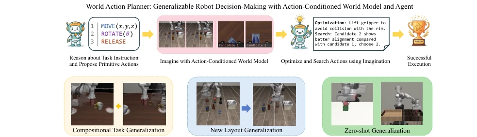
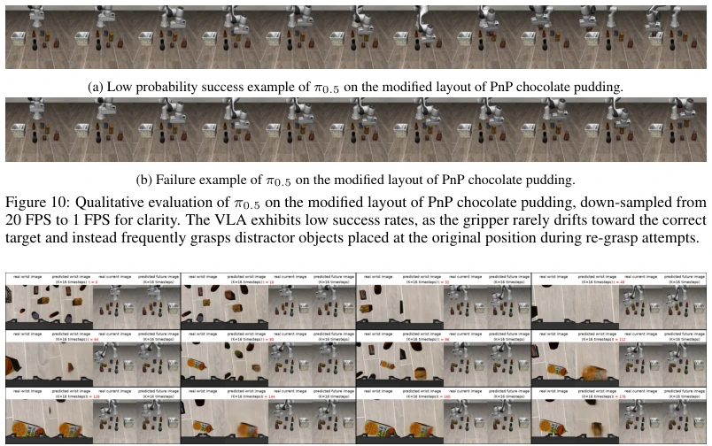
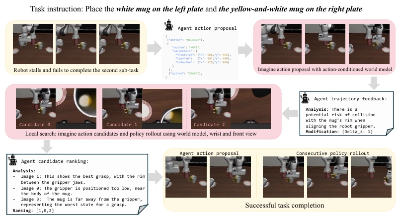
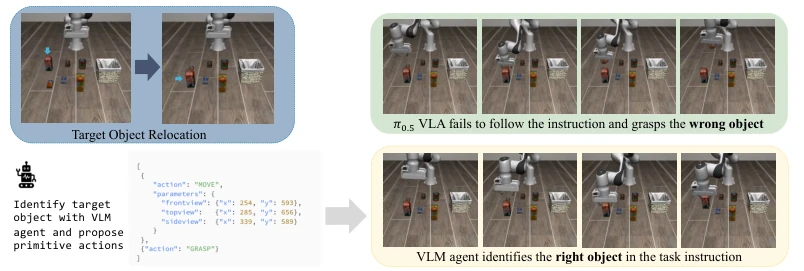
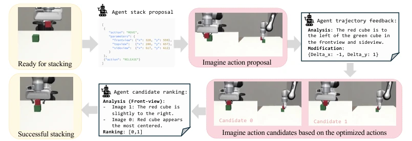
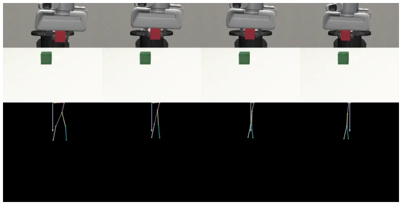
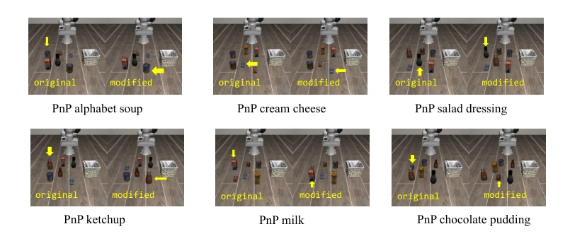
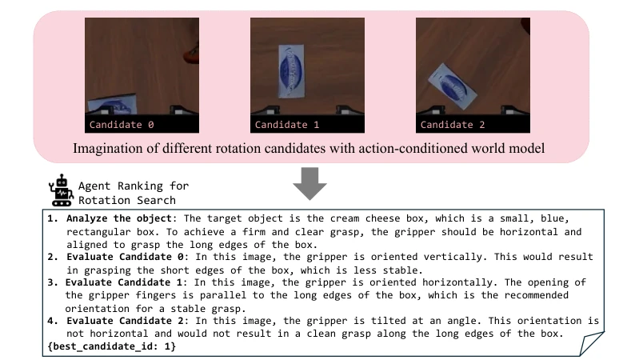
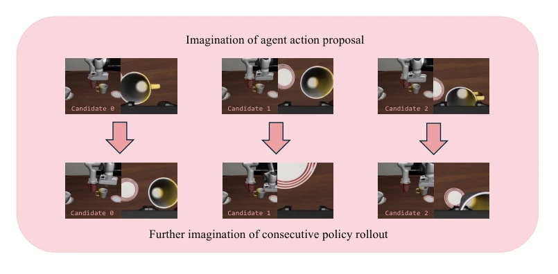
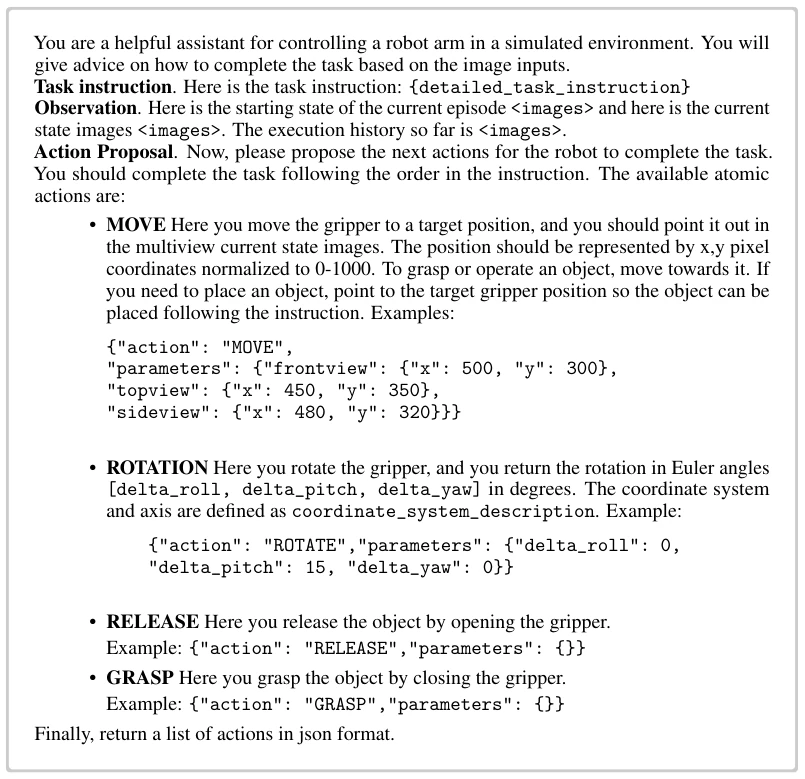

This paper pours cold water on the current frenzy of end-to-end embodied intelligence. Although VLA and WAM are very popular, the authors sharply point out that they are essentially overfitted imitation learning, revealing their true nature when encountering new scenarios. World Action Planner attempts to plan using 'imagination' (world model simulation) rather than generating actions directly; this strategy of 'retreating to advance' is indeed effective. Pose-Image conditioning is a highlight, more generalizable than directly feeding action vectors, capable of cross-robot transfer. But do not get too excited, experiments are all in simulation, real robots not yet deployed, and inference speed is slow, the manually designed pipeline is not elegant enough. It counts as reviving the 'planning' school of embodied intelligence, but is still far from general AGI, belonging to the typical case of 'theoretical richness, practical thinness'.
The core pain point of embodied intelligence is generalization. Existing end-to-end policies (such as VLA [27]) rely on demonstration data distributions; once the scene changes (e.g., object position movement) or task combinations (long horizon), the policy fails. Although WAM [35] generates videos, it often lacks physical causal understanding and is prone to overfitting pseudo-motion patterns in demonstrations. Imitation learning performs well in single tasks but has low sample efficiency in multi-task settings and cannot handle unseen task configurations. Theoretical analysis indicates that model-based methods outperform imitation learning in task generalization, especially in multi-task settings. Therefore, a planning system capable of combining high-level semantic reasoning and physical dynamic simulation is needed to solve the failure problems of existing models in novel scenes and compositional tasks.

Figure 1: We introduce World Action Planner, a planning system in which the agent reasons about and refines its action plans via world model imagination, generalizing to novel scenarios and solving new tasks at test time.

Figure 11: Qualitative evaluation of the cosmos-policy on the modified layout of the PnP chocolate pudding task, illustrating ground-truth environment rollouts alongside predicted future states from the WAM. Despite the modified layout, the model continues to target the original target object coordinates, resulting in repetitive and unsuccessful re-grasp cycles at the original position of the target object.
The system is divided into three steps: 1. VLM proposes raw action sequences (MOVE, ROTATE, etc.); 2. Global optimization, using world model to imagine trajectories, VLM feedback correction (e.g., obstacle avoidance); 3. Local search, grid sampling candidate actions, scoring by VLM after imagination. The core innovation is the Pose-Image conditioned world model, rendering robot joint positions as skeleton graphs input to the diffusion model, rather than low-dimensional action vectors, improving cross-robot generalization. The theoretical part proves the sample advantage of model planning in multi-task settings. In the specific process, VLM is responsible for high-level semantics, world model for physical verification, both iteratively optimized through imagination rollouts. The policy is treated as a tool, used only locally, avoiding the fragility of end-to-end models.

Figure 3: Illustration of world action planner in compositional task generalization

Figure 4: Illustration of new layout generalization
Tested in simulation environments such as LIBERO, Robosuite. Baselines include π0.5, cosmos-policy. The metric is success rate. In compositional tasks, baselines often stall, WAP can connect subtasks. Under new layouts, baselines grasp wrong objects, WAP can identify new targets. Zero-shot tasks can be completed without specific policies. Ablation experiments prove that optimization and search modules are indispensable. But simulation limitations are obvious, and inference is time-consuming. Specific results are presented in Table 3, 4, 5, WAP significantly outperforms baselines in all metrics, especially in scenarios requiring physical reasoning.

Figure 5: Illustration of world action planner with zero-shot planning in StackCube.

Figure 6: Illustration of inaccurate pose image. In the image, the first row is the actual environment rollout and the second row is the computed pose image using forward dynamics. Because the gripper action is close for every step, in the computed robot joint pose, the grippers jaws are closed immediately. In actual execution, due to the presence of the cube between the jaws, the opening between the jaws remain unchanged.
其他图片Other Figures

Figure 9: Original object layout and our modified object layout in LIBERO-Object. Yellow arrow points to the target object to be grasped into the basket.

Figure 12: Illustration of local search for gripper rotation. The VLM successfully identifies the right rotation from imagination of candidates, while failing to describe the correct rotation analytically.

Figure 13: Illustration imagining consecutive policy rollout. While in the first row, it is hard to identify which one is the good state to continue the second sub-task by grasping the mug, we can easily see that for Candidate 2, the policy successfully grasped the mug and continues the second sub-task from the consecutive policy rollout imagination in the second row.

Figure 15: Example prompt template for agent action proposal.